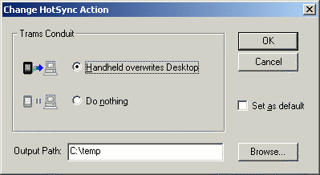

|
|
Installation |
Installation of Trams for Palm OS is much like installation of any other Microsoft Windows program:
- Double click the TramsforPalmOS-X.Y.exe file.
- Select Next a couple of times.
- Let the installer do its work - during installation you may be prompted to select a Palm Profile to receive the Trams.prc Palm program. You will only be prompted if you have multiple HotSync IDs on your computer.
Once finished, you'll find a Trams for Palm OS sub folder in your Programs folder of the Start menu. The sub folder contains the following entries:
- ChangeLog - a simple Log describing the changes done to Trams for Palm OS during its lifetime.
- Install Prc - a program to queue the Trams.prc Palm program for HotSync.
- Read Me - you really should read this document ...
- TramsCvt - a program to convert some of the Trams Mobile files to Trams for Palm OS format. See the Conversion Guide for more information.
- Uninstall - select this if you need to uninstall Trams for Palm OS.
After installing Trams for Palm OS you should start the HotSync manager, right click the icon in the tray, select Custom and select Change on the Trams entry:

The Output Path will be empty. The Output Path should point to the folder where the conduit should store the expenses files from your handheld. Normally this would be
c:\TRAMS\mobile\data
- but hey! YMMV! Click the Browse button and locate the folder.
Home Back